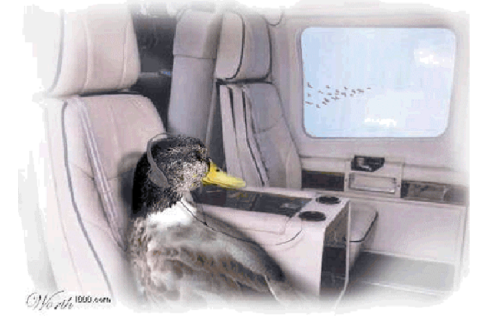

At Essent, our view on energy is that Sustainability and the energy transition are about people‘s behavior. We want to help everyone take their next step in energy and to do so we’ve planned simple, sustainable, and affordable solutions. In our ambition to deliver these products that will change the behavior of our customers, I’m convinced that we will need to deliver 100-fold product iterations before we hit the bullseye.
What does it take to become a true Tech Company?
It seems obvious that energy and utilities need to transform into something sustainable and less dependent on foreign sources. Which is easier said than done. Essent and E.ON are positioned well to have a genuine impact on the global energy transition: we work with suppliers, customers, and all other parties involved. We do experiments, learn what works and also learn what doesn’t work. One of the crucial enablers for Essent to have this impact is a fast and reliable IT Delivery. This has to do with short feedback cycles, fast releases, small increments, high performance, and a great user experience. Taking on this role will help us to become a true Tech Company.
Being a true tech company is not just about technology
Many aspects are equally relevant. In all these aspects, we can improve and continue to learn:
- Our leadership is inspiring and triggers real conversations driving sustainable continuous growth.
- Our engineers have automated repetitive and error-sensitive work so they can be creative and innovate together with our business.
- Our teams work on goals that relate to our customers. With end-to-end responsibility, they commit to results instead of deliverables.
- Our architecture is elegant. We understand it and co-create it along the way.
- Our technology is enabling us to accelerate and facilitates the craftsmanship of our engineers.
- Our systems are simply great. We know what they do and we have zero planned downtime.
But most of all, as a tech company we put our customers first and our engineers in the driver's seat.
Our journey ahead
Last year we merged the old ops and dev teams into a DevOps teams. This means that our scrum teams are responsible for both new development and operational excellence in production. It took us about a year from the first pilot up until the last piece of ops responsibility we pulled into the ARTs. Now we’re planning for our next steps. We see three themes to work on:
- A standardized Agile and DevOps way of working.
- Simplified microservice architecture
- And top tech talent.
At the time of writing this blog, we’re currently in sprint 187. For 186 times we have started and ended a sprint. Every three weeks, we learn, we deliver, and we improve. Still, we have a lot to learn and improve on. New teams have joined and new applications have been built. We currently have 25 IT teams, organized in three Agile Release Trains, but often times it feels like this is not enough to keep up with our ambitions. That’s what I love about Essent. We’re never satisfied. Good enough is simply not excellent.
Each of the three themes we’re working on come with their own challenges, but the fun part is that every result on any of the three themes immediately affects the others. It’s like a set of gear wheels. No matter which one you turn, everything moves. Our landscape is complex and our market changes rapidly. Looking at these challenges ahead of us, one thing is very clear. It’s not about working hard. It’s about working smart.
Want to share your ideas about our journey? Leave a comment!
